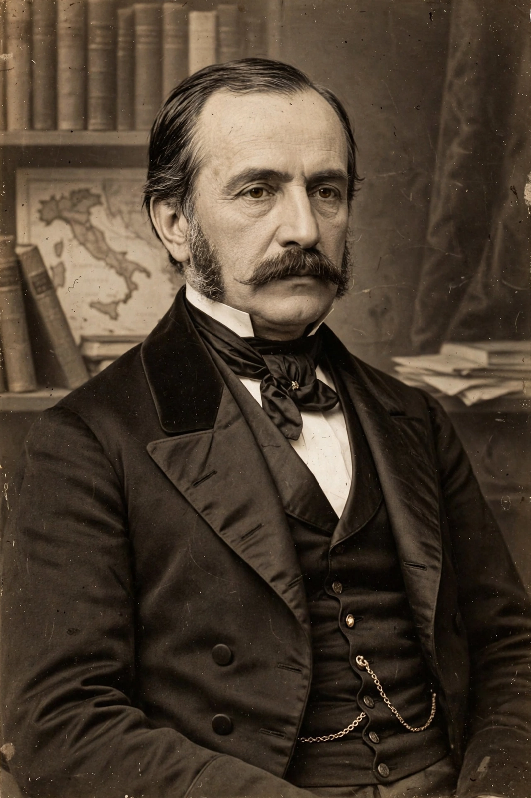

From Wikipedia, the free encyclopedia
| Gaetano Mosca | |
 | |
| Born | 1 April 1858, Palermo, Sicily |
|---|---|
| Died | 8 November 1941 (aged 83), Rome, Italy |
| Known for | Elite theory; the concept of the ruling class (classe politica) |
| Main work | Elementi di scienza politica (1896) |
Gaetano Mosca (1 April 1858 – 8 November 1941) was an Italian political scientist, journalist and public servant, and one of the founders, with Vilfredo Pareto and Robert Michels, of elite theory — the doctrine that an organised minority always rules the unorganised majority.
Mosca was born in Palermo and studied law there, becoming professor of constitutional law at Palermo, Turin and Rome. He sat in the Italian Chamber of Deputies from 1909 to 1919, served as undersecretary for the colonies during the First World War, and was made a senator in 1919. A liberal conservative critical of mass democracy and later of fascism, he signed Benedetto Croce's anti-fascist manifesto of intellectuals in 1925.
In Elementi di scienza politica (1896; published in English as The Ruling Class, 1939) Mosca argued that in every society two classes appear: a class that rules and a class that is ruled. The ruling class — the classe politica — is always the less numerous, performs all political functions, monopolises power, and enjoys its advantages, while the larger ruled class is directed and controlled by it. Because an organised hundred will always triumph over a thousand unorganised individuals, majority rule is, in his view, a fiction; what varies historically is how the ruling class recruits itself, legitimises its power through a "political formula" (such as divine right or popular sovereignty), and is balanced by countervailing social forces.
Mosca's work influenced Pareto's theory of the circulation of elites, Michels's "iron law of oligarchy," and later elite theorists such as C. Wright Mills. James Burnham drew heavily on Mosca, Pareto and Michels in The Machiavellians (1943). His insistence that democracy be judged by whether juristic defences — institutions protecting individuals from power — survive marks his version of elite theory as a liberal one.